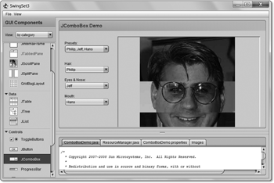

14 Einführung in grafische Oberflächen
»Wenn die Reklame keinen Erfolg hat, muss man die Ware ändern.«
– Edgar Faure (1908–1988)

14.1 Das Abstract Window Toolkit und Swing
Die Programmiersprache Java, die sich das Ziel gesetzt hat, plattformunabhängige Softwareentwicklung zu unterstützen, muss auch eine Bibliothek anbieten, um grafische Oberflächen zu gestalten. Eine Bibliothek sollte dabei im Wesentlichen die folgenden Bereiche abdecken:
- Sie beherrscht das Zeichnen grafischer Grundelemente wie Linien und Polygone und ermöglicht das Setzen von Farben und die Auswahl von Zeichensätzen.
- Sie bietet grafische Komponenten (GUI-Komponenten), auch Steuerelemente oder Widgets genannt, wie zum Beispiel Fenster, Schaltflächen, Textfelder und Menüs.
- Sie definiert ein Modell zur Behandlung von Ereignissen, wie etwa Mausbewegungen.
14.1.1 SwingSet-Demos
Um sich einen Überblick über die Swing-Komponenten zu verschaffen, hat Oracle unter den JFC-Demos des JDK (etwa C:\Program Files\Java\jdk1.7.0\demo\jfc) verschiedene Beispiele veröffentlicht. (Achtung: Der Ordner ist nur dann vorhanden, wenn bei der Installation explizit die Demos mitinstalliert wurden.) Die in den weiteren Unterordnern enthaltenen Demos sind als Jar-Datei verpackt und können mit einem Doppelklick gestartet werden. Seit Java 6 Update 10 ist SwingSet3 mit dabei, ein interessantes Swing-Demo, das über die Technologie WebStart aus dem Internet gestartet wird. Die readme.hmtl-Datei referenziert auf die URL http://download.java.net/javadesktop/swingset3/SwingSet3.jnlp, die wir auch in den Browser einsetzen können, um das Beispiel zu starten.
Abbildung 14.1: SwingSet3 Demo
14.1.2 Abstract Window Toolkit (AWT)
Die erste API zum Aufbau grafischer Oberflächen war das Abstract Window Toolkit (AWT). Sie bietet Methoden für die Primitivoperationen zum Zeichnen, zur Ereignisbehandlung und einen Satz von GUI-Komponenten. Da das AWT jedoch sehr einfach gehalten ist und professionelle Oberflächen nur mit Mühe erstellbar sind, sind für die Abkürzung »AWT« noch einige hämische Deutungen im Umlauf: »Awful Window Toolkit«, »Awkward Window Toolkit« oder »Annoying Window Toolkit«.
Peer-Klassen
Eine Besonderheit des AWT ist, dass es jede grafische Komponente in Java auf eine Komponente der darunterliegenden Plattform abbildet. Dazu bedient sich das AWT sogenannter Peer-Klassen, also Partnern auf der Seite der speziellen Benutzeroberfläche. Eine Schaltfläche unter AWT leitet somit die Visualisierung und Interaktion an eine Peer-Klasse auf der Betriebssystemseite weiter. Damit sehen AWT-Anwendungen unter Windows so aus wie jede andere Windows-Anwendung, und für Anwendungen unter Mac OS oder X11 gilt das Gleiche.
Die Partner haben Vor- und Nachteile:
- Durch die nativen Peer-Klassen verhält sich die Oberfläche exakt so wie erwartet und ist optisch nicht von anderen nativen Programmen zu unterscheiden.
- Leider zeigen die Programme unter den verschiedenen Betriebssystemen bisweilen merkwürdige Seiteneffekte. So kann ein Textfeld unter Windows weniger als 64 KiB Zeichen aufnehmen, bei anderen Oberflächen ist dies egal.
- Da das AWT auch nur Komponenten anbietet, die auf jeder Plattform verfügbar sind, ist das Angebot an Widgets sehr beschränkt. Moderne grafische Elemente, sei es auch nur ein Icon auf einer Schaltfläche, bietet das AWT nicht an.
Da jede AWT-Komponente Ressourcen von der nativen Plattform bezieht und diese außerhalb der Speicherverwaltung von Java liegen, nennen sich diese Komponenten schwergewichtige Komponenten (engl. heavyweight components).
14.1.3 Java Foundation Classes
Obwohl das Abstract Window Toolkit das Problem einer einheitlichen Benutzeroberfläche lösen sollte, ist dies Sun damals nicht ganz gelungen. Das AWT war von Anfang an zusammengepfuscht. So meinte auch James Gosling:
»The AWT was something we put together in six weeks to run on as many platforms as we could, and its goal was really just to work. So we came out with this very simple, lowest-common-denominator thing that actually worked quite well. But we knew at the time we were doing it that it was really limited. After that was out, we started doing the Swing thing, and that involved working with Netscape and IBM and folks from all over the place.«[195](Das Interview vom 24. März 1998 ist leider unter http://java.sun.com/javaone/javaone98/keynotes/ gosling/transcript_gosling.html nicht mehr online – Oracle hat die Seite gelöscht.)Von AWT 1.02 auf AWT 1.1 wurde ein anderes Ereignismodell eingeführt, das die Basis für Swing legte.
Da Sun das AWT einfach hielt, Entwickler von Oberflächen jedoch einen unstillbaren Hunger nach Komponenten haben, konzipierte Netscape die Internet Foundation Classes (IFC), die das AWT in wesentlichen Punkten ergänzten. Im April des Jahres 1997 einigten sich Sun, Netscape und IBM auf eine GUI-Bibliothek, die auf Netscapes IFC aufbaut und das AWT in der Java-Version 1.2 erweitert. Der Name des Toolkits, mit dem wir heute noch arbeiten, ist JFC (Java Foundation Classes).
Bestandteile der Java Foundation Classes
Die Java Foundation Classes bestehen im Wesentlichen aus:
- Swing-GUI-Komponenten: Unter die Swing-Set-Komponenten fallen ganz neue grafische Elemente. Diese sind, anders als die plattformabhängigen Peer-Komponenten des herkömmlichen AWT, fast vollständig in Java implementiert. Während viele Swing-Komponenten gar keine Beziehung zu AWT-Komponenten haben, gilt das nicht für alle. Ein javax.swing.JFrame basiert zum Beispiel auf der AWT-Komponente java.awt.Frame, denn JFrame ist eine Unterklasse von Frame.
- Pluggable Look & Feel: Dies gibt uns die Möglichkeit, das Aussehen der Komponenten zur Laufzeit zu ändern, ohne das Programm neu zu starten. Alle Komponenten des Swing-Sets haben diese Fähigkeit automatisch.
- Java 2D API: Die 2D-Klassenbibliothek ist eine neue Technik, die über eine Objektbeschreibung – ähnlich wie PostScript – Objekte bildet und diese auf dem Bildschirm darstellt. Zu den Fähigkeiten der Bibliothek gehört es, komplexe Objekte durch Pfade zu bilden und darauf Bewegungs- und Verschiebeoperationen anzuwenden.
- Drag & Drop: Daten können mittels Drag & Drop leicht von einer Applikation zur anderen übertragen werden. Dabei profitieren Java-Programme auch davon, Daten zu nutzen, die nicht aus Java-Programmen stammen.
- Accessibility (Unterstützung für Menschen mit Behinderungen): Diese API erlaubt mit neuen Interaktionstechniken den Zugriff auf die JFC- und AWT-Komponenten. Zu diesen Techniken zählen unter anderem Lesegeräte für Blinde, eine Lupe für den Bildschirm und auch die Spracherkennung.
Swing-Komponenten sind ein wesentlicher Bestandteil der JFC, und oft wird in der Öffentlichkeit »Swing« als Synonym für JFC verstanden.
| Warum Swing Swing heißt |
|
Als 1997 in San Francisco auf der JavaOne die neuen Komponenten vorgestellt wurden, entschied sich Georges Saab, ein Mitglied des JFC-Teams, für Musik parallel zur Präsentation, und zwar für Swing-Musik, weil der Entwickler glaubte, dass sie wieder in Mode käme. Dementsprechend wurden die neuen grafischen Elemente in einem Paket namens Swing abgelegt. Obwohl der Name offiziell dem Kürzel JFC weichen musste, war er doch so populär, dass er bestehen blieb. |
Übersicht über Swing-Komponenten
| JLabel | |
| JButton | |
| JCheckBox | |
| JRadioButton | |
|
|
JTextField |
| JPasswordField | |
|
|
JComboBox |
| JScrollBar | |
| JSlider | |
| JSpinner | |
| JProgressBar | |
| JList | |
| JTabbedPane | |
| JToolBar | |
| JMenu | |
| JScrollPane | |
| JTree | |
| JTable | |
| JEditorPane |


Leichtgewichtige Swing-Komponenten
Eine Leichtgewicht-Komponente (engl. lightweight component) verfügt über keinen Peer, also über keine direkte Repräsentation im Fenstersystem. Somit gibt es keine speziellen Implementierungen des Systems beispielsweise auf Windows, Mac OS oder X11. Alle Komponenten werden mit primitiven Zeichenoperationen gemalt, so etwa eine Schaltfläche aus einem Rechteck mit Schatten und einem Text in der Mitte. Ein Vorteil: Eine Leichtgewicht-Komponente kann durchsichtig sein und muss nicht mehr in einen rechteckigen Bereich passen. Da alle Komponenten nun gemalt werden, lässt sich alles ohne Rücksicht auf das zugrunde liegende grafische System zeichnen. Dieser Weg ist also plattformunabhängiger, aber nutzt nicht unbedingt alle optimalen Möglichkeiten, wie zum Beispiel Antialiasing, des Betriebssystems oder die Möglichkeiten einer Plattformkomponente, wie den komplexeren Dateiauswahldialog.
14.1.4 Was Swing von AWT unterscheidet
Wir werden in diesem Buch nicht mit AWT-Komponenten arbeiten, aber dennoch wesentliche Unterschiede aufzählen:
- Swing bietet viel mehr Komponenten als AWT. Das AWT bietet zum Beispiel keine Tabellen oder Bäume.
- Schaltflächen und Labels nehmen Symbole auf, die sie beliebig um Text angeordnet darstellen.
- Swing-Komponenten können transparent und beliebig geformt sein; eine Schaltfläche kann wie unter Mac OS X abgerundet sein.
- Jede Swing-Komponente kann einen Rahmen bekommen.
- AWT-Komponenten arbeiten nicht nach dem Model/View-Prinzip, nach dem die Daten getrennt von den Komponenten gehalten werden.
- Die AWT-Methoden sind thread-sicher, es können also mehrere Threads zur gleichen Zeit Methoden der AWT-Komponenten aufrufen. Die meisten Swing-Methoden sind nicht thread-sicher, und Entwickler müssen darauf achten, dass Parallelität keine problematischen Zustände erzeugt.
| Wofür Java in der Praxis eingesetzt wird |
|
Mit den JFC lassen sich attraktive, gut funktionierende grafische Oberflächen entwickeln. Eine Untersuchung der Evans Data Corporation aus dem Jahr 2005 fand heraus, dass sich 43 % der Java-Entwickler mit Desktop-Applikationen beschäftigen, 41 % mit Java EE-Technologien und 4 % mit Mobile Java. Die Untersuchung beweist, dass Java nicht ausschließlich im Bereich Middleware (Stichwort Java EE) zu finden ist, sondern eine ausgezeichnete Umgebung für GUI-Applikationen unter Windows, Linux, Mac OS X ... bildet. |
14.1.5 GUI-Builder für AWT und Swing
Der Bau von grafischen Oberflächen in Java weist die Besonderheit auf, dass das Design der Oberfläche in Java-Code gegossen werden muss. Jede Komponente muss mit new erzeugt werden und mithilfe eines Layouts explizit angeordnet werden. Wir nennen das programmierte Oberflächen. Die Änderung des Layouts ist natürlich sehr schwierig, da mitunter auch für kleinste Änderungen viel Quellcode bewegt wird.
Programmierte Oberflächen stehen im Gegensatz zu deklarativen Oberflächen, bei denen die Beschreibung des Layouts und die Anordnung der Komponenten nicht in Java formuliert wird, sondern in einer externen Datei. Die Beschreibung kann etwa im XML-Format sein, die dann beschreibt, wie das Objektgeflecht aussieht.
Für deklarative Oberflächen hat sich in den letzten Jahren kein Standard gebildet, und Oberflächen werden heute noch so programmiert wie von 15 Jahren. Eine Sache hat jedoch die Entwicklung massiv vereinfacht: GUI-Builder. Diese Softwarelösungen bieten eine WYSIWYG-Oberfläche mit allen Komponenten, und Entwickler können sich jedes Layout zusammenklicken. Im Hintergrund erzeugt der GUI-Builder den Programmcode. Für die Laufzeitumgebung hat sich also nichts verändert, aber für uns schon.
Auswahl von GUI-Buildern
NetBeans ist neben Eclipse eine bekannte Java-Entwicklungsumgebung. Sie bietet eine sehr gute Unterstützung im Entwurf grafischer Oberflächen und gibt uns eine gute Möglichkeit, Swing spielerisch zu erfahren.[196](Didaktiker nennen das »exploratives Lernen«.) Ein GUI-Bilder ist gleich integriert, und eine Zusatzinstallation ist nicht nötig.
Bei Eclipse ist standardmäßig kein GUI-Builder integriert, weder in der normalen Eclipse-Version noch in der Java EE-Version. Es gilt also, ein Plugin nachzuinstallieren. In den letzten Jahren kamen und gingen verschiedene GUI-Builder, aber letztendlich hat sich der Windows Builder (http://code.google.com/intl/de-DE/javadevtools/wbpro/ index.html) von Google als De-facto-Standard etabliert. Über den Update-Mechanis- mus von Eclipse wird er installiert. Eine Installationsanleitung findet sich unter http://code.google.com/intl/de-DE/javadevtools/wbpro/installation/index.html.
Ihr Kommentar
Wie hat Ihnen das <openbook> gefallen? Wir freuen uns immer über Ihre freundlichen und kritischen Rückmeldungen.
 Jetzt bestellen
Jetzt bestellen


{kind=link}
{kind=link}
{kind=link}
{kind=link}
{kind=link}
{kind=link}
{kind=link}
{kind=link}
{kind=link}
{kind=link}
{kind=link}
{kind=link}
{kind=link}
{kind=link}
{kind=link}
{kind=link}
{kind=link}
{kind=link}